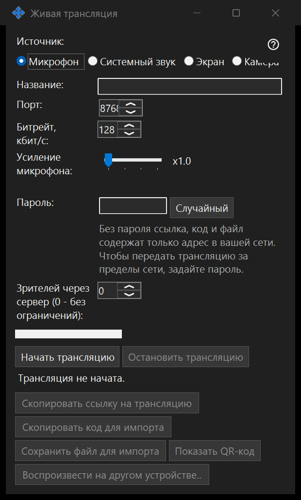

Прямой эфир
Назначение
Передавайте экран, одно окно, камеру, микрофон или системный звук из Share Manager. Открывайте прямой эфир в 64-битном просмотрщике по ссылке, коду или файлу .fmsbcast. Захват начинается только по нажатию «Начать».


Порядок действий
Выберите источник, затем монитор или отдельное окно для захвата экрана либо камеру и её режим. До нажатия «Начать» проверьте название, пароль зрителя, звук и доступ зрителей из локальной сети. Зрителям передаётся выбранное изображение и звук, включая видимые в источнике личные данные. Копируйте ссылку или сохраняйте файл .fmsbcast после начала эфира. «Остановить» завершает сеанс; закрытие захватываемого окна тоже завершает его эфир.
Элементы окна
Прямой эфир
Выберите источник, затем монитор или отдельное окно для захвата экрана либо камеру и её режим. До нажатия «Начать» проверьте название, пароль зрителя, звук и доступ зрителей из локальной сети. Зрителям передаётся выбранное изображение и звук, включая видимые в источнике личные данные. Копируйте ссылку или сохраняйте файл .fmsbcast после начала эфира. «Остановить» завершает сеанс; закрытие захватываемого окна тоже завершает его эфир.
Настройки менеджера · Настройки общего доступа SFTP · Настройки сервера обмена